Section 2.3: Misleading Graphical Representations of Data
Learning Objectives
1.Identify and describe misleading and deceptive graphs and graphics.
Just as with any statistic, graphs can sometimes be misleading. The following section will provide a few examples of the common misleading graphs and give you the means to judge them. Hopefully you will gain insight into how graphs can deceive, intentionally or unintentionally, and you will avoid being misled by graphical misrepresentations of data.
Most often, graphs are made to be misleading by mismanaging the scales of the axes or leaving large amounts of the scale unseen.
Example 1: The Vertical Axis
The data in Table 12 shows the number of associate degrees awarded by community colleges in the United States in the last year before the COVID pandemic and the first year during the pandemic when most institutions adopted online learning. The bar graph in figure 2.28 displays the information from the table in a misleading way. What is misleading about this graph?
Table 12: Associate Degrees Awarded (in thousands) | |
|---|---|
School Year | Degrees Awarded |
2018 - 2019 | 1,037 |
2019 - 2020 | 981 |
Figure 2.28: Associate Degrees Awarded 2019 and 2020
Solution:It is true that more degrees were awarded during the 2018 – 2019 school year. It appears from the bar graph that there were more than twice as many degrees awarded that year as during the 2019 – 2020 school year. But is that correct? The numbers of degrees dropped from 1037 (which really means 1,037,000 degrees) down to 981 (or 981,000 degrees). That is a drop of 56,000 degrees. As a percent, that is a drop of only 5.4%. So why does the small drop look so large in the graph? The problem is that the bars are not in proportion because the vertical axis does not start at zero. The vertical axis begins at 950, so everything lower has been ignored. The result is we see only the top of the bars, and small differences are magnified. A bar graph of the data made using STATBELT Utility is shown in figure 2.29. On that graph you can see that the bars are not as dramatically different as suggested by figure 2.28.
Figure 2.28: Associate Degrees Awarded 2019 and 2020.
Figure 2.29: A reasonable bar graph for the data in Table 12.
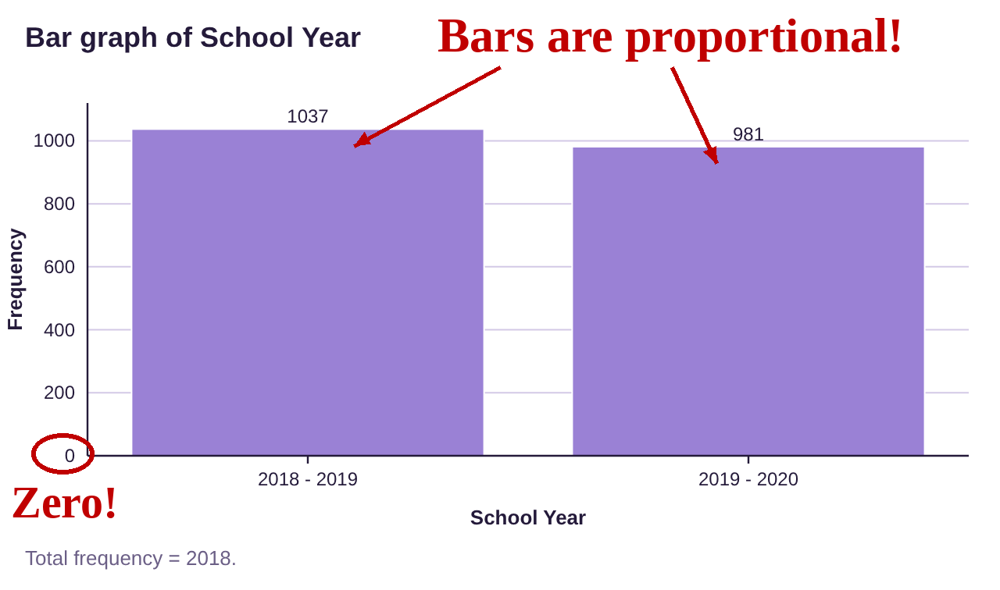
Because the vertical axis now has a scale staring with zero, the two bars are proportionally accurate. There are still more degrees awarded in the year prior to the pandemic, but the difference is far less than the original graph suggested.

Important Point! Bar graphs, Histograms, and the Vertical Axis
It is important to use zero on the vertical scale of any bar graph or histogram to keep the bars proportional. This allows you to fairly represent and interpret the differences in frequency (or relative frequency) between the categories.
Also, the vertical axis must use correct scaling. That means the increments marked on the vertical axis must be marked with equally spaced tick-marks. Failure to use correct spacing allows bars to appear out of proportion to the data.
Example 2: The Vertical Axis
What is misleading about the graph shown in figure 2.30, the crime rate per 100 thousand people from 1990 to 2018?
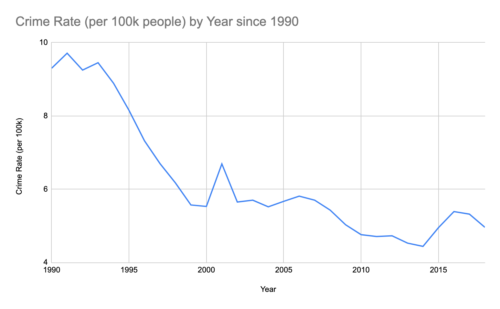
Figure 2.30: Crime rate per 100 thousand people.
Solution: This time-series plot suffers from the same problem as the previous bar graph. The vertical axis on this graph does not include zero. This causes the changes in height to appear more drastic. It appears that there was nearly no crime in 2014, at least compared to 1991. But although the rate was lower, it was not as dramatically low as it appears in this graph. Figure 2.31 is a corrected version of the same time-series plot. Comparing, you can see that figure 2.31 is flatter and does not exaggerate the crime rate differences. The crime rate in 2014 correctly appears to be around half the rate of 1991, instead of 10% of it, as it appeared in the first plot.
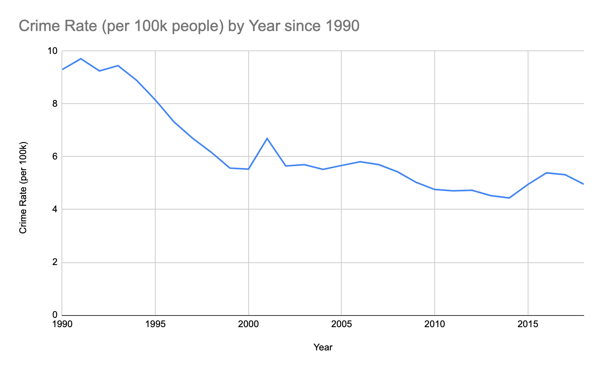
Figure 2.31: Crime rate per 100 thousand people with corrected vertical axis scale.
Example 3: An Unlabeled Bar Graph
What is misleading about the bar graph in figure 2.32?
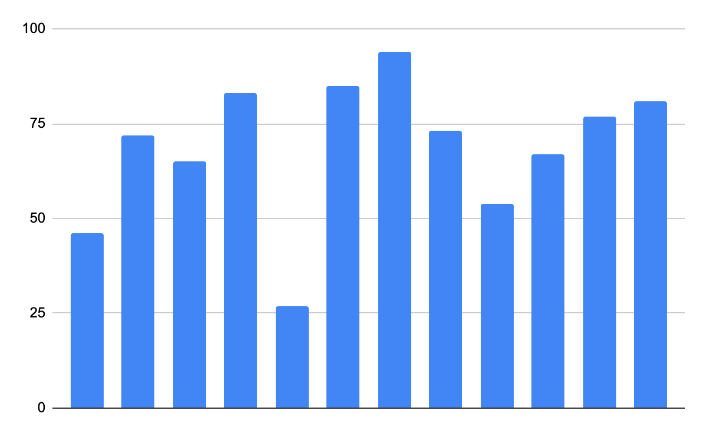
Figure 2.32: A problematic bar graph.
Solution:Can you guess what this bar graph represents? The bars are not labeled, so we can tell that the tallest bar is taller than the others, but what does each bar stand for? The vertical axis is labeled, but we don’t even know what the vertical axis represents. Is it percentages? Frequency? There is no way to know. This graph is useless!
Example 4: The Vertical Axis
What is wrong with the bar graph in figure 2.33? The bars represent top issues of concern among Americans evaluating the performance of the President.
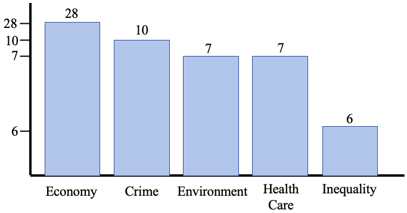
Figure 2.33: Issues Americans identify as most important in evaluating the President.
Solution:Look at the vertical scale. Is it marked properly? It appears that the increment between 7 and 10 is the same as the increment between 10 and 28. And the largest increment is between 6 and 7. In short, the scale has been incorrectly marked. Why would someone do that? Most statistical software will automatically create graphs that have correct scales and are proportional. Making misleading graphs takes effort, so you should assume that the creator is attempting to deceive you. In this case, the creator wanted to minimize the impact of the economy and deemphasize the category for “Inequality”. A properly scaled version is shown in figure 2.34. The corrected bar graph (it’s a Pareto chart) contains two additional categories not present in the original graph.
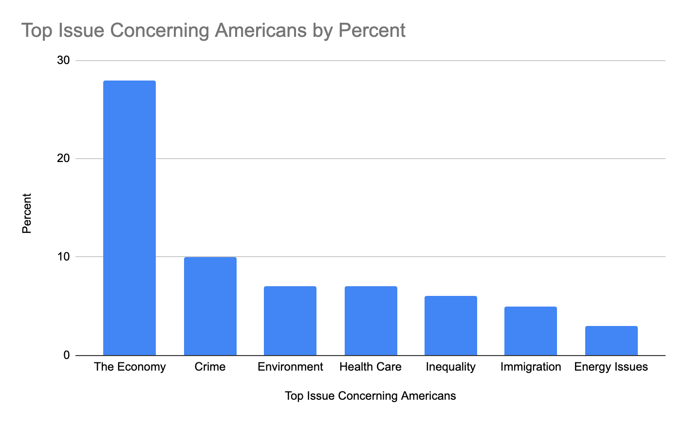
Figure 2.34: Issues Americans identify as most important in evaluating the President, with proper vertical scale.
Example 5: No Vertical Axis
What is misleading about the bar graph in figure 2.35? The data are from the Real College Survey conducted by the Hope Center. The data reports the percent of each racial or ethnic group that suffers from marginal or high levels of food insecurity.
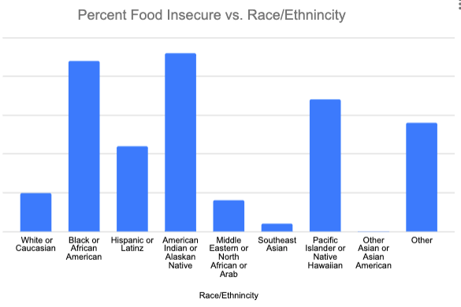
Figure 2.35: Percent of ethnic groups that suffer from marginal or high levels of food insecurity.
Solution: Here, there is no vertical axis. We can see that the tallest bars are for Black or African American and American Indian or Alaskan Native, but how much taller are they than the others? Did the vertical axis start at zero? What was the scale factor? Was it 1% between the horizontal lines, or 20%? There is no way to correctly interpret this graph. Using the data from the Hope Center, a corrected graph is shown in figure 2.36. Notice that the original vertical scale did not include zero, so differences between categories were magnified in the first graph.
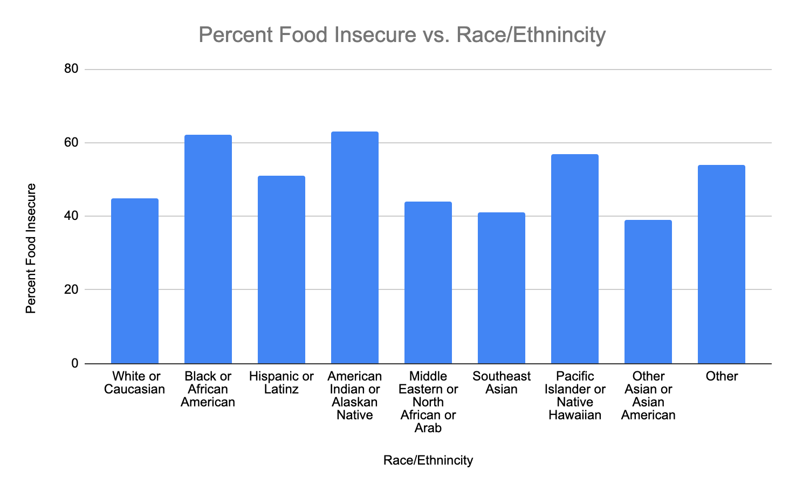
Figure 2.36: Percent of ethnic groups that suffer from food insecurity.
Example 6: Horizontal Axis
What is misleading about the graph in figure 2.37? The data represent the median cost of a single-family home in the United States.
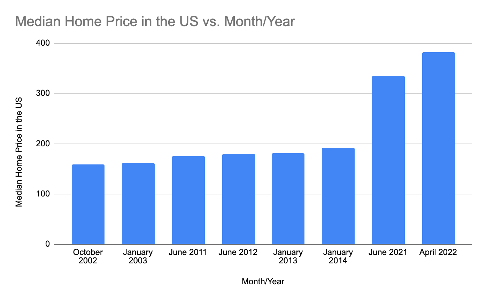
Figure 2.37: Median price of a single-family home in the US.
Solution:Look at the horizontal scale. It appears to be a time-series plot using bars, but the times are not equally spaced. The horizontal categories increase from October 2002 to January 2003 (three months) but then jump to June 2011, a jump of 8.5 years. Then there are several measurements from 2012 through 2014, and then a 7-year gap to 2021. The data were “cherry-picked” to make it appear that housing prices had been stable for many years, until they suddenly spiked in 2021 and 2022. Had data been included between 2014 and 2021, the jump would not have looked so sudden. Figure 2.38 is a correctly scaled time series plot for the median home price since 2012. You can see that the prices have increased, but the spike was not as severe or sudden as it was dramatically shown in the first misleading graph.
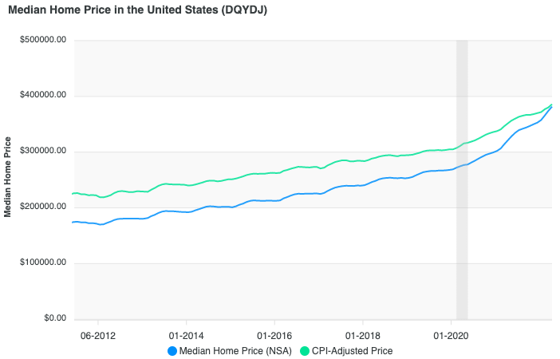
Figure 2.38: Median price of a single-family home in the US. Source: DQYDJ
Important Point! Histograms and Time-Series Plots and the Horizontal Axis
Histograms and time-series plots must have correctly spaced horizontal axes. That means the increments marked on the horizontal axis must be marked with equally spaced tick-marks. Failure to use correct spacing will distort the distribution or trend in the data.
Another common problem with graphs involves pie charts. Occasionally, a pie chart will have percentages that are either not proportional, or do not add up to 100%. Consider the following examples.
Example 7: Bad Pie Chart Proportions
The pie chart in figure 2.39 displays subjects “favorite super-hero movie franchise”. What is misleading about the pie chart?
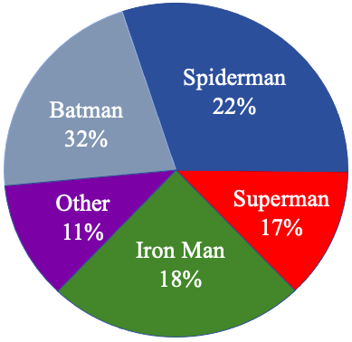
Figure 2.39: Favorite Super-Hero Movie Franchise.
Solution: At first glance, the observer would think that Spiderman was the most popular franchise because the dark blue sector of the pie is the largest. But 22% should be less than one-fourth of the pie, so that sector is drawn much too large. In fact, Batman had a popularity of 32%, which should have been the largest sector. Instead, it is not only smaller than Spiderman, but appears to be less then 25% of the pie as drawn. Ironman and Superman had very close percentages at 17% and 18%, but the slice of pie for Iron Man far more than 1% larger. The slices total 100%, but the sectors are out of proportion. Thankfully, STATBELT Utility will create the correct sizes of pie slices without you needing to do anything. Figure 2.40 is a graph with the same data created using STATBELT Utility. The colors are different, but the proportions are correct.
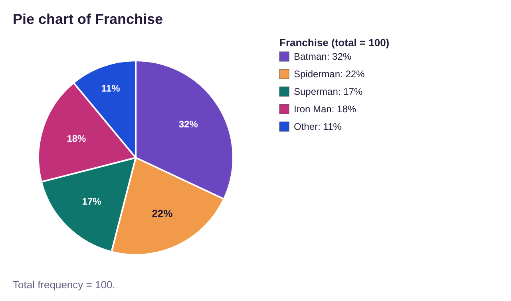
Figure 2.40: Favorite Super-Hero Movie Franchise by STATBELT Utility.
Another common mistake some make is to treat a bar graph as a pie chart. This is a remake of a famous example from FOX News.
Example 8: FOX News famous Pie Chart
This graph in figure 2.41 was made to replicate a famous FOX News pie chart. The original chart displayed the three leading candidates for the Republican nomination for President in 2012. The question asked republican voters to check the names of candidates they would support if they were to win the nomination. What is misleading (or frankly just plain wrong) with this graph? (This graph is not the original, produced by FOX News and Opinions Dynamic. Search the internet for “misleading graphs” and this will usually show up as a top hit).
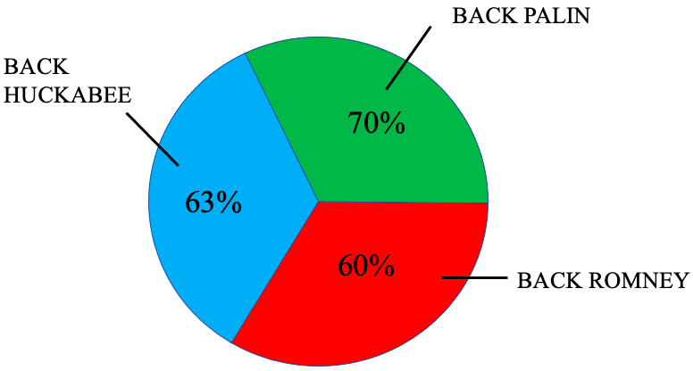
Figure 2.41: Remake of a famous FOX News graphic.
Solution:This graph attempted to force data that was appropriate for a bar graph into a pie chart. The problem was that the responders were able to select more than one option. A pie chart can only be used if the sectors of the pie do not overlap. In this case, there were many responders who would have supported all three candidates. So, a bar graph would have been a better choice to display the data. Instead, they created a pie chart that, instead of adding to 100% (as any reasonable pie chart should), instead totals 193%.
Important Point! Pie Charts
Pie Charts can only be used to show qualitative data with no overlapping categories. The area of the sectors, or slices, must be proportional to the size of the categories. The total of all percentages should be 100%.
Finally, you should always be wary of Pictographs. A pictograph is a picture, intended to be partly entertainment, but that includes numerical information. The intent of a pictograph is not to convey meaningful relationships between categories, but instead to make cute eye-grabbing pictures that will get your attention. Occasionally, they may be created to hide or magnify the importance of a category, idea, or factor.
Example 9: A Pictograph
The illustration in figure 2.42 displays data obtained from The American Association of Orthopedic Surgeons. They did not produce this graphic. What is misleading about this pictograph?
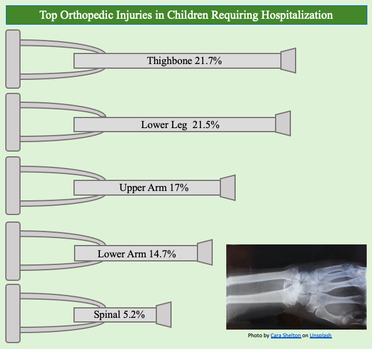
Figure 2.42: Pictograph of top orthopedic injuries in children requiring hospitalization.
Solution:It’s a cute picture, right? Using crutches for the bars gives the sense that it is like a bar graph. But does the bar include the handle, or just the shaft? It’s difficult to tell. Regardless, the lengths of the crutches are drawn, one would suppose, to make the picture more attractive to the eye. There is no scale provided, so we can’t use the length of the crutches to compare the injury categories. For instance, the crutch for spinal injuries at 5.2% looks like it is too long. Two of them placed end-to-end should result in a crutch that is 10.4% long. But that would appear to be longer than the crutch for thighbone which is 21.7%. How can 10.4% be more than 21.7%? It can look that way if you don’t use a scale!
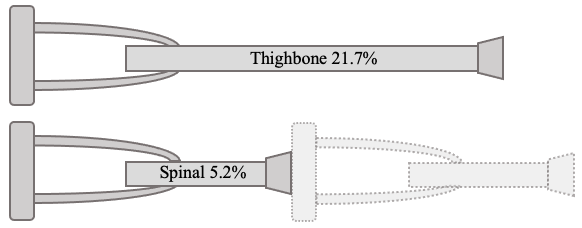
Two of the spinal crutches should measure 10.4%, but that appears longer than 21.7% for thighbone injuries.
Also, note that the percentages add up to 80.1%, leaving 19.9% of childhood injuries requiring hospitalization unstated. In other words, all other injuries add up to more than all but two of the categories in the graph. This not so much misleading as incomplete.
If a devious person wanted to suppress scales to increase the importance of a small quantity or idea, or to decrease the importance of a large quantity or idea, the use of a pictograph is a perfect solution. Scales are not required or expected, so the creator can make small things as large as they wish or make large things as small as they wish. As a result, you should never trust the graphic nature of a pictograph. The numbers may be accurate, but the graph is usually meaningless, if not misleading.
Important Point! Pictographs
Pictographs are types of charts that use images to convey data. The images are generally not displayed using correct proportions. They are created to grab the attention of the reader by creating an eye-grabbing and pleasing but potentially misleading picture.
Additionally, it is important to watch out for pictographs that use enlarged two or three-dimensional pictures to represent a linear relationship.
Example 10: A Pictograph using Wolf Pictures
The illustration in figure 2.43 displays data tracking the gray wolf population in the Greater Yellowstone National Park region. What is misleading about this pictograph? (The data source is the National Park Service wolf page (opens in a new tab). They did not produce this graphic.)
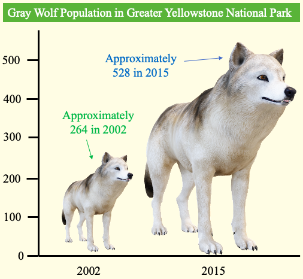
Figure 2.43: Pictograph of the Gray Wolf population in Greater Yellowstone National Park.
Solution:The graphic provides a vertical scale, showing the population in 2002 at approximately 264. In 2015, the population is approximately 528, or exactly double. The graphic has doubled the height, but the picture is 3-dimensional. The wolf from 2015 is twice as tall as the wolf from 2002 but would be about 8 times the volume because it is also twice as wide and twice as deep. If the smaller wolf weighed 10 pounds, the larger would weigh 80 pounds. Even though we don’t think that when we view the image, we tend to feel it. That is how these types of graphs can mislead. The use of the wolf picture instead of a simple bar graph is attractive but makes the increase in population appear to be more than doubled. A time-series graph or even a bar graph, shown in figures 2.44 and 2.45 would fix the problem. But they aren’t as cute!
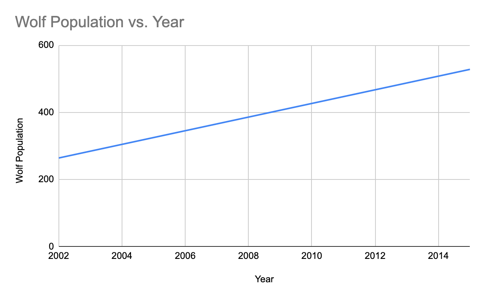
Figure 2.44: Time-series plot of the Gray Wolf population in Greater Yellowstone National Park.
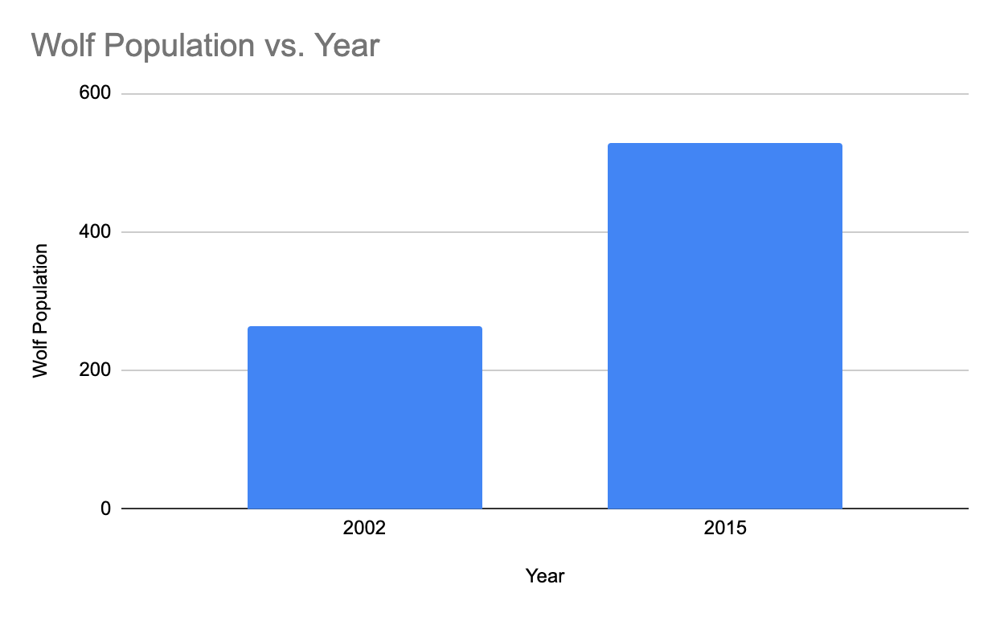
Figure 2.45: Bar graph of the Gray Wolf population in Greater Yellowstone National Park.
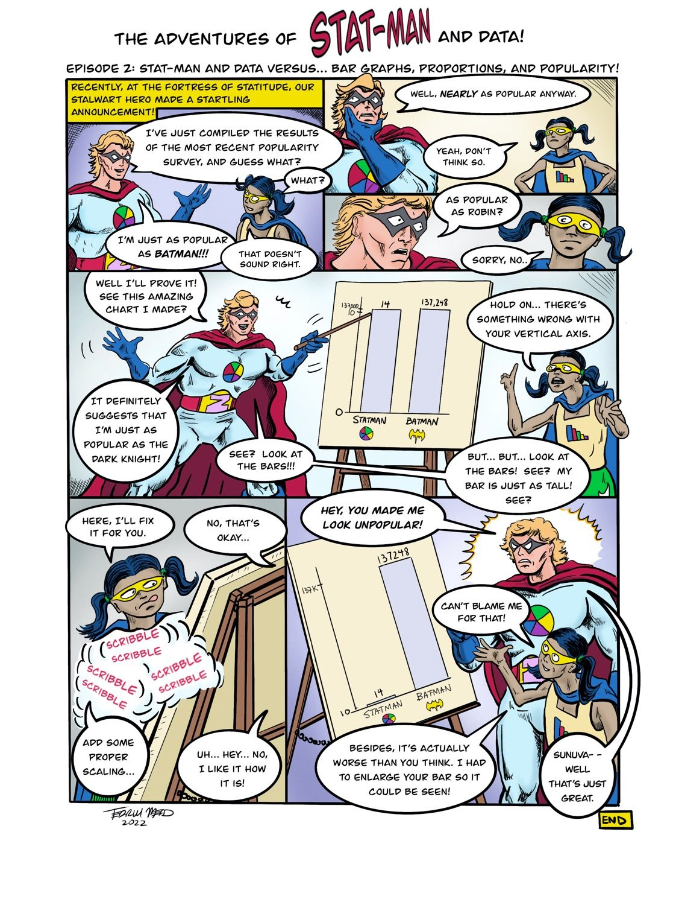
Text version of the comic
The Adventures of Stat-Man and Data! Episode 2: Stat-Man and Data versus… Bar Graphs, Proportions, and Popularity!
Caption: Recently, at the Fortress of Statitude, our stalwart hero made a startling announcement!
Stat-Man: I’ve just compiled the results of the most recent popularity survey, and guess what?
Data: What?
Stat-Man: I’m just as popular as Batman!!!
Data: That doesn’t sound right.
Stat-Man: Well, nearly as popular anyway.
Data: Yeah, don’t think so.
Stat-Man: As popular as Robin?
Data: Sorry, no.
Stat-Man points to a bar graph on an easel. Its vertical axis starts at 10 and jumps straight to 137,000. The bars for “Statman” (14) and “Batman” (137,248) look the same height.
Stat-Man: Well I’ll prove it! See this amazing chart I made? It definitely suggests that I’m just as popular as the Dark Knight! See? Look at the bars!!!
Data: Hold on… there’s something wrong with your vertical axis.
Stat-Man: But… but… look at the bars! See? My bar is just as tall! See?
Data: Here, I’ll fix it for you.
Stat-Man: No, that’s okay…
Data scribbles on the chart (SCRIBBLE SCRIBBLE). Data: Add some proper scaling…
Stat-Man: Uh… hey… no, I like it how it is!
The redrawn graph has a proper scale from 10 to 137K. Batman’s bar (137,248) is tall; Statman’s bar (14) is a tiny sliver at the bottom.
Stat-Man: Hey, you made me look unpopular!
Data: Can’t blame me for that! Besides, it’s actually worse than you think. I had to enlarge your bar so it could be seen!
Stat-Man: Sunuva– well that’s just great.
END (Signed Terrill Mead, 2022)